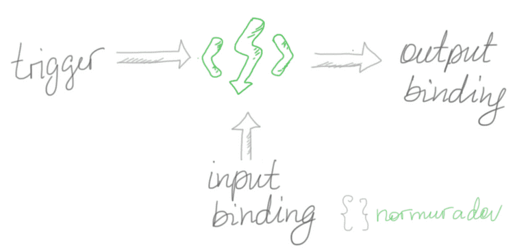

Azure Functions: Part I
introduction
There is a great pleasure in developing these days, as you can invest less time into development operations and focus on creating value through code. Stateless on-demand comuting is one of the things we can put to your tool belt and care less about server configurations.
definition by Microsoft
Azure Functions is an event driven, compute-on-demand experience that extends the existing Azure application platform with capabilities to implement code triggered by events...states the documentation from the repository.
Azure Function
Serverless Computing Service
where to start
Below I give a brief overview of how one can bootstrap oneself in serverless computing.
overview
Azure Functions is a Service by Azure that comes as a modern approach to solve eternal problems in software. As the first solution we build an API. Follow this to bootstrap yourself:
- Signup to Azure and create basic subscription or try for free.
-
Install:
- Visual Studio Code
- Azure Functions Core Tools
- Visual Studio Code
- NodeJS
- Visual Studio Code
basic functionality
example
module.exports = async function (context, req) {
if (req.method === 'GET') {
const id = context.bindings.req.params ? context.bindings.req.params.id : null
if(id){
const result = Persons.find(p=>p.id == id)
context.res = {
// status: 200, /* Defaults to 200 */
body: result
};
}else{
context.res = {
// status: 200, /* Defaults to 200 */
body: Persons
};
}
}else if(req.method === 'POST'){
Persons.push(req.body)
context.res = {
// status: 200, /* Defaults to 200 */
body: Persons
};
}else if(req.method === 'DELETE'){
const id = context.bindings.req.params ? context.bindings.req.params.id : null
Persons = Persons.filter(p=>p.id != id)
context.res = {
// status: 200, /* Defaults to 200 */
body: Persons
};
}
else {
}
};
The basic configuration for HTTP triggered function could also be RESTful. The code is here.

Farrukh Normuradov
Programmer
Westminster International Univesity in Tashkent